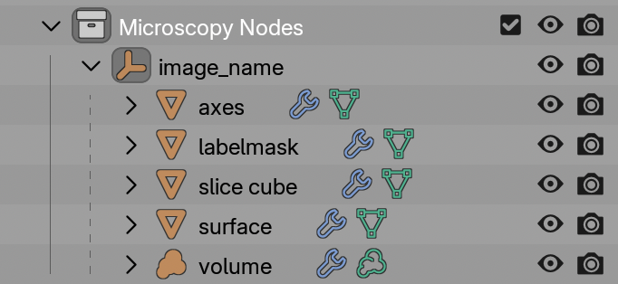

3. Objects
Microscopy Nodes loads your microscopy data as different types of objects, depending on how you loaded each channel.

Each type of object is placed in a holder collection. The Axes and Slice Cube are always present.
You can select an object by clicking on it in the outliner (as shown in the screenshot) and change its properties:
- Change underlying data in the modifier menu of the properties or the (advanced) Geometry Nodes workspace
- Change visualization in the material menu of the properties or the Shader Nodes workspace
The exact settings and where to change them change per object, so see below.
Holder
The Holder is an empty object which is the parent of the other Microscopy Nodes objects.
The holder can be scaled, moved and rotated and then all of its objects will be transformed along with it.
Axes
The Axes object is always loaded with your dataset. It draws a scale grid based on the number of pixels, pixel size, and pixel unit.
-
Geometry options
pixel unitper tickThe distance between grid lines
- Grid
Whether to draw a grid or only a box
- Line thickness
Thickness of lines in arbitrary units
- Frontface culling
If ticked, clips out the axes that are closest to the camera or viewpoint, so that they do not obstruct the view.
- Separate planes
For each plane (xy bottom, top etc) you can select whether they will be drawn
-
Shader options
- Color
Scale grids can be moved, scaled and rotated independently of the holder without losing their accuracy.
Bars versus grids
In Microscopy Nodes, only scale grids are shown. Blender’s default cameras are perspective cameras, where traditional scale bars are not very meaningful. We'll probably add support for some form of scale bar in the future for orthographic renders.
Volumes
The Volume holds channels of volumetric data, which can be rendered either as emitting or scattering light. It is generated when you enable Volume during loading.
- Geometry options
- Included channels
If channels are not included, they are also not loaded into RAM
- Included channels
- Shader options
- Pixel intensities
- Opacity calculation
- Color LUT
The easiest way to edit a volume shader is in the Shader Nodes workspace, where you can most easily switch between channels in the properties.
You can toggle between emission and scattering modes using the emission toggle in loading.
Surfaces
The Surface object is a mesh extracted from a volume using an isosurface threshold. It is generated when you enable Surface during loading.
-
Geometry options
- Included channels
- Threshold
The intensity value above which the surface is extracted.
- Voxel size (only listed if Mesh Resolution is not
Actual)Interactive scalable unit for mesh detail
-
- Standard mesh shading parameters (color, opacity etc)
Label Masks
The Label Mask object is a mesh generated from a label image, such as a segmentation channel. It is generated when you enable Labelmask during loading.
Each value in the volume is turned into a separate mesh.
-
Geometry options
- Included channels
-
- Color per label
- Revolving colormap or linearly distributed among objects
- Standard mesh shading parameters (color, opacity etc)
Slice Cube
The Slice Cube is a movable object that defines the visibility of other objects.
The slice cube is inherently nothing else than a Cube with a transparent shader. The linkage to its transparency is done from the shader of the sliced object. This means you can also add a new cube and point to this instead.
This has no Geometry options or Shader options
How the Microcopy Nodes objects work
The data objects are Geometry Nodes objects that reference preloaded data stored in the cache collection. In the Geometry Nodes workspace you can add edit the loaded data and add modifiers.